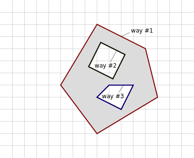
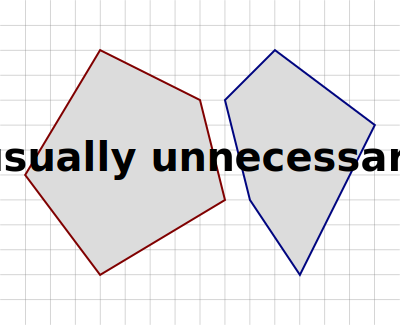
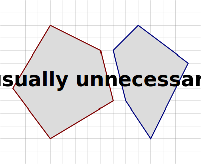

Landuse mapping in OpenStreetMap – Mapping Styles and Age of Data
Michael Reichert
State of the Map Europe 2024, Łodz
Motivation


Coverage
Multipolygons (Introduction)
Way 1: landuse=forest
Multipolygons (Introduction)

Relation 1: type=multipolygon + landuse=forest
Way 1: no tags
Way 2: any tags
Multipolygons (Introduction)
Relation 1: type=multipolygon + landuse=forest
Way 1: no tags
Way 2: any tags
Way 3: any tags
Multipolygons (Introduction)

Relation 1: type=multipolygon + landuse=forest
Way 1: any tags, e.g. highway=primary
Way 2: any tags, e.g. highway=track
Unnecessary Multipolygons (Definition)
 

Unnecessary Multipolygons per Cell
Separation of Roads and Landuse


Landuse Connected with Roads
Landuse Separated from Roads

Landuse Separated from Roads
Roads Sharing Nodes with Landuse
"glued" roads releative to road network length
How Old Are Our Forests?

Forest near Eiterfeld (Hesse, Germany) from 2008 (likely mapped with Yahoo or Landsat imagery)
Where are the old polygons?
Median age of landuse nodes per cell